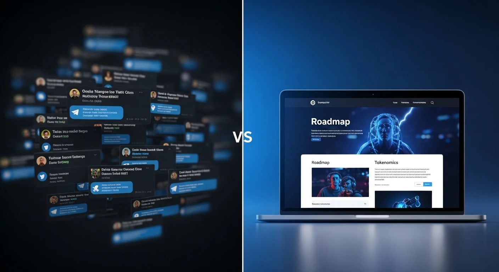

November 03, 2025
Why Your Crypto Project Needs a Professional Website (Not Just Twitter)
In the fast-paced world of crypto, many new projects rely only on Twitter and Telegram to build a community. But this is a huge mistake. A professional website is not a luxury—it's the most critical tool for building trust and legitimacy.
1. Build Trust and Legitimacy
Investors are smart. When they see a project with only a Twitter account, it feels cheap and temporary. A clean, fast, and well-designed website shows that you are serious. It's your digital headquarters. It proves you have invested time and resources into your project, which makes investors feel safer.
2. Control Your Message
Twitter is noisy. Your important announcements (like a roadmap or tokenomics) can get lost in a sea of memes. Your website allows you to control the narrative. You can clearly present:
- Your Roadmap: What are your goals for the next 6 months?
- Tokenomics: How is your token distributed? What is the utility?
- Your Team: Who is behind the project? (Even if anon, a professional layout helps).
This information should be easy to find, not buried in old Telegram messages. As a developer specializing in Web3 and crypto platforms, this is the first thing I help projects build.
3. Create a Central Hub
Your website is the center of your universe. It's the one place you can link everything together. This includes:
- Links to your DApp (like a swap).
- All social media links (Twitter, Telegram, Discord, etc.).
- Embedded charts (DEX Screener).
- Your "How to Buy" guide.
Don't make your users hunt for information. A website organizes everything in one place. You can see examples of this in my past projects.
4. SEO: Attract Organic Clients & Investors
This is the most underrated part. When people search on Google for "new solana projects" or "best new meme coin," your Twitter account will never show up. A website optimized for SEO (Search Engine Optimization) will.
Organic traffic from Google brings in new investors and clients who were actively looking for a project just like yours. This is how you grow beyond your small community.
Related Reading
Building a good website is the first step. Next, you need the right features. Read about the 5 must-have features for a successful meme coin website.
Conclusion
A Twitter account is for shouting. A website is for building. If you want your project to be taken seriously and attract real investors, you need a professional website.
Need a Professional Crypto Website?
I build fast, secure, and professional websites for Crypto, Web3, and Meme Coin projects. Let's build your project's digital headquarters together.
Get a Free Quote View Services